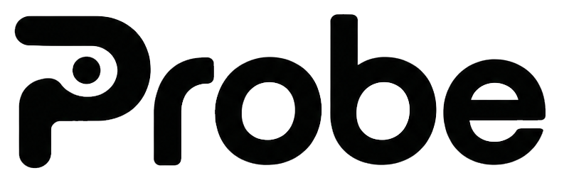

Folders of this computer (OneDrive, SharePoint, Google Drive, Dropbox, iCloud, a network share…) or a Google Drive read through its API. Probe keeps a private copy of each reviewed version in your user profile.
No synchronization client needed. Probe only reads (drive.readonly) and downloads a document only once it changed: the reviewed version is taken from the Drive version history.
Create a "Desktop app" OAuth client in a Google Cloud project where the Google Drive API is enabled (in a Google Workspace, an internal app needs no review by Google), then paste its id and secret. The secret is stored in the system keychain.
Findings are always computed on this computer. Once a provider is set, each changed document is explained automatically as soon as the change is detected: only its findings, the changed excerpts and the passages that still use a replaced name or term are sent to the provider, never the whole file.
The key is stored in the system keychain (Credential Manager on Windows, Keychain on macOS).